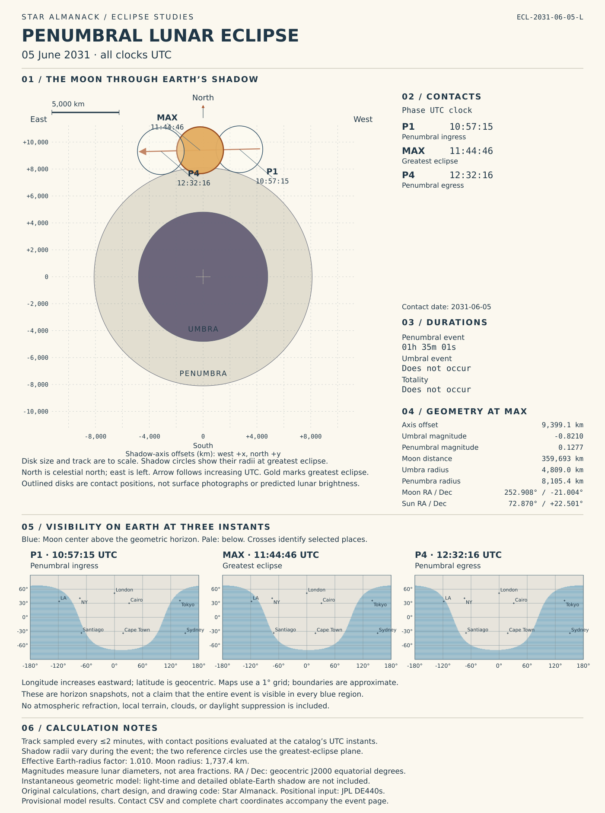

Penumbral lunar eclipse
2031-06-05
Calculated lunar eclipse chart
Open the full-resolution chart for detailed study


Contact coordinates (CSV) · Complete chart measurements (JSON)
Original chart and calculations by Star Almanack; positional input from the credited JPL kernel. Model assumptions and limitations appear on the chart.
Where to watch
The calculated chart above maps where the Moon’s center is above the geometric horizon at penumbral ingress, greatest eclipse, and penumbral egress. These are three snapshots; they do not establish whole-event visibility or account for terrain, refraction, weather, or twilight.
What this eclipse means
The full Moon passes through Earth’s penumbra, the outer shadow where Earth blocks only part of the Sun. It misses the dark central umbra. The effect is a subtle shading of the lunar disk rather than a sharp dark bite or a total eclipse’s red glow.
What to look for
Look for a gentle uneven dimming near greatest eclipse, especially on the side nearest the umbra. A shallow penumbral eclipse can be difficult to detect by eye; photographs taken with the same exposure before and during the event can make the difference easier to compare.
This event
- Greatest eclipse (UTC)
- June 5, 2031 at 11:44:46 UTC
- Position source
- JPL DE440s kernel; Star Almanack shadow geometry
- Effective Earth-radius factor for lunar shadow
- 1.01
Timing and phases
All times are UTC. Convert both date and time to your local time.
These lunar phases happen at the same instants for everyone; only phases with the Moon above your horizon can be seen.
| Phase | UTC |
|---|---|
| Penumbral phase begins P1 | |
| Greatest eclipse greatest_utc | |
| Penumbral phase ends P4 |
Durations derived from the stored times
- Entire penumbral event (P1–P4): 1 h 35 min 1 s
Calculated geometry
Stored catalog values at greatest eclipse. Signs and precision are retained as calculated.
| Quantity | Value | Meaning |
|---|---|---|
| Shadow-axis distance axis_distance_km | 9399.056 km | Moon-center distance from Earth’s shadow axis at greatest eclipse. |
| Penumbral margin penumbra_margin_km | -443.729 km | Axis distance minus the sum of penumbral and lunar radii; a negative value indicates overlap. |
| Umbral overlap margin central_margin_km | 2852.681 km | Axis distance minus the sum of umbral and lunar radii; negative indicates umbral overlap, not necessarily totality. |
| Earth’s umbral radius core_radius_km | 4808.975 km | Radius of Earth’s umbra at the Moon’s projected distance behind Earth. |
Watching the eclipse
A lunar eclipse is safe to watch directly, with binoculars, or through a telescope. You can see a phase only while the Moon is above your horizon; clouds and twilight also affect the view.
Calculation records
Download complete stored record (JSON)
Sources
Explanatory text and eclipse calculations are original work by Star Almanack. The calculations use Sun, Earth, and Moon positions from JPL’s DE440s ephemeris kernel. Event times, shadow geometry, and the supplied central-path coordinates are calculated by Star Almanack from those positions.